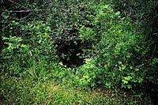
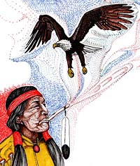

Batoche
Buffalo Jump
Buffalo Pound
Burial Mound
Chimney Coulee
Cutknife Hill &
Chief Poundmaker
Duck Lake Battlefield
Fish Creek Battlefield
Frenchman Butte
Petroglyph Park
Qu'Appelle Legend
Steele Narrows
Wanuskewin
|
Batoche National Historic Site
In 1872, Xavier Letendre dit "Batoche" built a store and a warehouse, and began a ferry service where the Carlton Trail crossed the South Saskatchewan River. It proved to be a highly successful commercial venture and the village quickly grew around the crossing.
The bison was food, clothing and shelter for the Plains Indian, yet think what it might have been like for a hunter to encounter a bison at close range. A full-grown bull stands two meters at the shoulder and weighs nearly a tonne. It can run up to 50 kilometers per hour.
The piles of stones and mud scattered along the valley are the remains of chimneys which stood for many years to mark the sites of Metis cabins, trading posts and a police post where Cree, Assiniboine and Blackfoot often clashed.
It is March, 1885. Between Fort Carlton and Batoche was the village of Duck Lake whose store contained arms and provisions that would be useful to either Riel's or Crozier's forces in the event of an armed conflict.
St Victor's petroglyphs (or rock carvings) are one of Saskatchewan's prehistoric mysteries. No one knows exactly who carved them, why they were carved, or even when they were carved.
On June 2nd, 1885, Big Bear's Indians, with hostages from Fort Pitt, retiring from the Battle of Frenchman Butte, were overtaken here by Inspector Sam Steele and a small detachment of North-West Mounted Police.
|
|
|
|
Buffalo Jump
Plains Indian culture was centered around the buffalo. For thousands of years, before the introduction of horses from Europe, "Buffalo Jumps" were an effective means of hunting these large animals on foot.
You are standing on the top of a one-thousand year old Indian burial mound looking south across the Qu'Appelle River Valley and Crooked Lake.
Cutknife Hill &
"It would be so much easier just to fold our hands and not make this fight..." Chief Poundmaker
When Middleton's scouts discovered fresh tracks and campfires, the element of surprise was lost. Shooting broke out and the battle of Fish Creek began.
 The pits were dug the evening of May 27, 1885 by order of Wandering Spirit with approximately 250 warriors, 950 civilians, and 70 hostages. They all stayed in the trenches overnight. In the morning fog of May 28 ...
 Qu'appelle means "calling river", but how did this valley get its name?
The power of Wanuskewin captures your imagination as soon as you enter the park gates and feel the thunder of the great bison.
|